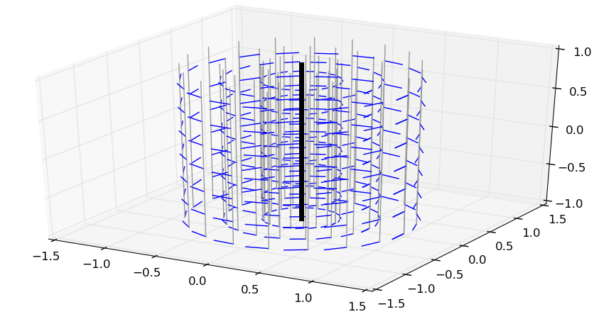
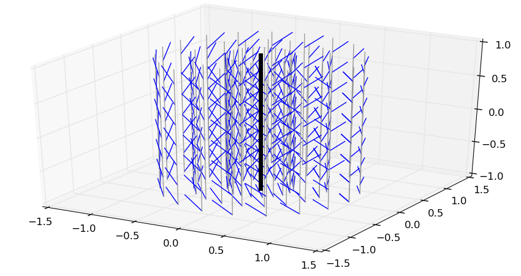

Screws, the mathematical objects used to
describe rigid body motions and forces, are intrinsically linked with axes, be
it axes of motion (such as the rotation axis of a pure rotation) or force (such
as the line of action of a force).
Central and noncentral axes
The central axis of a screw s^ is the axis directed by the
resultant r where the moment mP is parallel to
r (not necessarily zero). A noncentral axis of the screw is any
other axis in space directed by the resultant r. From Varignon’s
formula, any two points P and Q belonging to a noncentral axis
have the same moment mP=mQ. This way, the moment field can be
seen as a vector field over noncentral axes (5D space) rather than over points
(6D space).
Another interesting value for a screw is its automoment, which is the scalar
product (r⋅mP) between its resultant and its moment.
Again, from Varignon’s formula, it does not depend on the point P∈E3 selected to compute it. In particular, on the central axis
Δc, the moment is given by:
mΔc=(r⋅mΔc)∥r∥2r = ρ(s^)rwhere ρ(s^)=(r⋅mP)/(r⋅r) is the
pitch of the screw. A screw is fully defined by:
- its pitch ρ(s^),
- its central axis Δc, and
- its magnitude ∥r∥.
Going back to Chasles’ theorem on twists:
- the central axis Δc is the axis of the motion,
- the magnitude ∥ω∥ gives the amount of the rotation around Δc, and
- the pitch ρ(t^)=(ω⋅vP)/(ω⋅ω) gives the amount of translation along Δc.
Illustration
Here is a small Python function with mplot3d to plot the
moment field of a screw, assuming Δc goes through the origin:
from matplotlib.pyplot import figure, show, ion
from mpl_toolkits.mplot3d import Axes3D
from numpy import linspace, cos, sin, arange, pi, array, cross
def plot_screw(res, pitch, scale=0.2):
"""
Plot screw as a vector field.
Args:
res (float): size of each arrow in our plot.
pitch (float): pitch of the screw.
scale (float): scaling factor for each arrow.
""""
fig = figure()
ax = fig.gca(projection='3d')
for r in linspace(0., 1., 4):
for theta in linspace(0, 2 * pi, 20):
x, y = r * cos(theta), r * sin(theta)
ax.plot([x - res[0], x + res[0]], [y - res[1], y + res[1]],
[-1, 1], color='#999999')
for z in arange(-1., 1., 0.3):
u, v, w = scale * (cross([x, y, z], res) + pitch * res)
ax.plot([x, x + u], [y, y + v], [z, z + w], color='b')
ax.plot([-res[0], +res[0]], [-res[1], +res[1]], [-1, 1], color='k', lw=5)
show()
Here is the example of a screw with zero pitch, such as a pure rotation. The
bold black line shows the central axis, while the thin gray lines are for
noncentral ones. The moment field (linear velocities) is in blue.

Now, the same with a pitch ρ(t^)=1 m/rad, meaning each
radian of rotation brings a one meter translation:

We see where the word “screw” comes from: following the moment field of the
screw above is like following the thread of an actual screw.
To go further
Mathematically, screws are members of the Lie algebra se(3)
of the Lie group SE(3). An excellent read is Sardain and Bessonnet’s
survey paper Forces Acting on a Biped Robot. Center of Pressure—Zero Moment
Point.
It uses of the axial representation of screws to derive the center of pressure
and zero-tilting moment point of
the contact wrench, which are commonly used in balance control of legged robots.
Discussion
Feel free to post a comment by e-mail using the form below. Your e-mail address will not be disclosed.